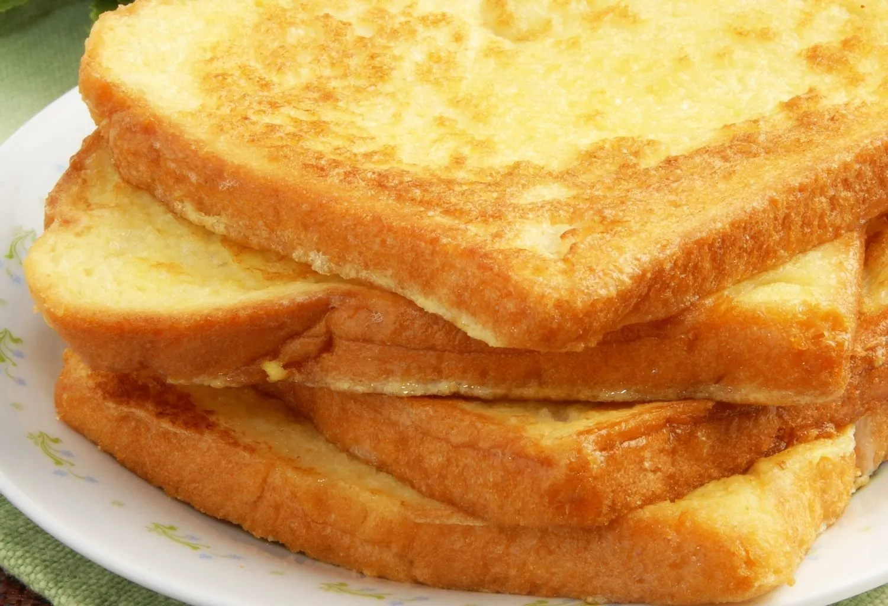

Eggy Bread

Delicious sourdough bread whipped together with egg
This is a childhood staple of mine and has quickly become a staple of my own children's lunches.
It's tasty. It's nourishing. It's fluffy and soggy and exquisite. Fats, Carbs, Proteins all wrapped up in a delicious eggy bready package.
Ingredients
- 3 eggs
- 3 slices of sourdough bread
- butter
- salt
- pepper
Steps
- Whisk the eggs in a bowl
- Add salt & pepper to the egg mixture
- Heat the butter on the stove
- Soak one piece of bread in the egg bowl, making sure it seeps through
- Fry the bread on medium-high heat for about a minute on each side
- Plate the finished golden brown eggy bread and repeat with the two other pieces